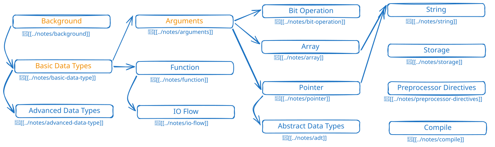

C
2026-10-06
catalog

笔记
按主题组织的学习笔记：
Background
：C 语言的历史与背景
Compile
：编译与运行流程
Basic Data Type
：基本数据类型
Advanced Data Type
：聚合数据类型
ADT
：抽象数据类型
Storage
：存储
String
：字符串
Bit Operation
：位运算
Function
：函数
Arguments
：参数
Pointer
：指针
IO
：输入输出流
Preprocessor Directives
：预处理指令
标准库
assert.h
complex.h
ctypes.h
inttypes.h
iso646.h
limits.h
math.h
stdarg.h
stdbool.h
stdint.h
stdio.h
stdlib.h
string.h
tgmath.h
time.h
unistd.h
书
K&R《C 程序设计语言》：
中英对照
·
目录
《C Primer Plus》：
目录
《C 和指针》：
目录
《C 专家编程》：
目录
《C 陷阱与缺陷》：
目录
其他细节
History of C
：C 语言简史
CC
：编译器 cc
Hello World
进制系统：
carry-system
struct-pascal-c
：Pascal 与 C 的结构对比
整数与字符：
integer-represent-char
·
integer-space
流程控制示例：
if
·
switch 1
·
switch 2
·
while 1
·
while 2
·
goto
参考资料
书籍合集（百度网盘）
，提取码
eiai
C Primer Plus 网页版
，作者只写了前八章
推荐书目：《实用 C 语言编程（第三版）》《嗨翻 C 语言》